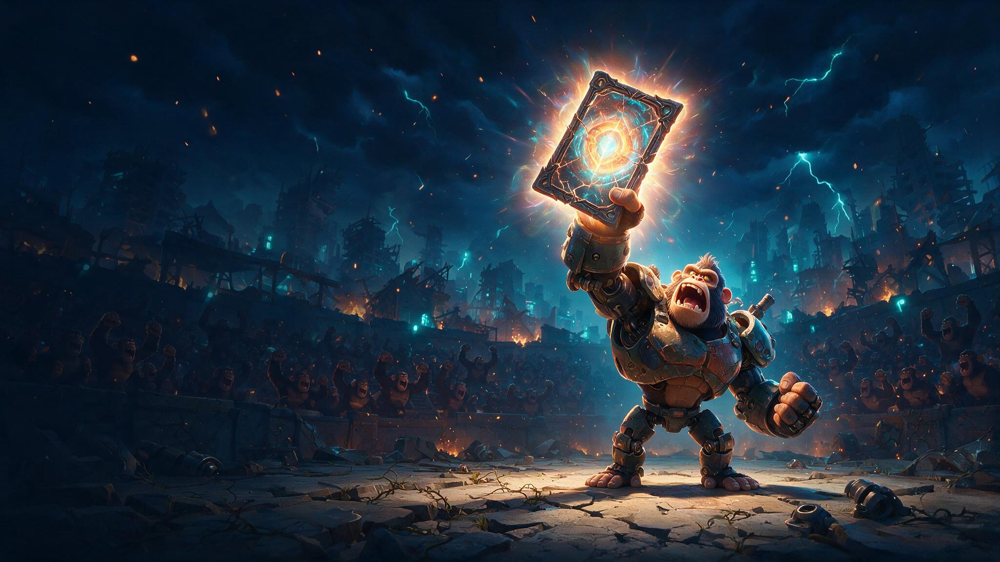
版本轨迹：v1.1 炉石式卡组决策→零决策 ｜ v1.2 装备去卡化 + 内嵌抽奖 + 付费点定版 ｜ v1.3 五人小队 ｜ v1.4 编成自由（战斗零操作）｜ v1.5 掉落双轨与主游戏耦合 ｜ v1.6 全卡牌化 ｜ v1.7 分层体验（0 氪可达保证）—— 卡牌只承担「收藏形态 + 视觉资产」职能，玩家全部投入都在养成与收集层。
| 判断 | 数据支撑（均出自本人回归报告） | 对本案的含义 |
|---|---|---|
| 玩家时间是被验证的富矿 | 挖孔七期（活动 UI 点击流会话化实测）：全服累计投入 9,179 小时（保守口径，宽口径 17,880 小时）； 人均 38 分钟 / P90 达 100 分钟，3,157 人（21.6%）投入超 1 小时； 238 万次挖掘动作、人均活跃 3.46/7 天、38.3% ≥5 天、87% 使用挂机 | P2 玩家有大量「游戏内可支配时间」，活动玩法是时间的容器，付费是时间投入的副产品 |
| 纯抽 GACHA 形式在衰减 | 弹珠 GACHA（纯抽）四个投放期：周年庆 $393,020 → 万圣 $155,816 → 圣诞 $144,974 → 科技 $126,371， 连降三期、峰值回撤 -68% | 衰减的不是付费意愿，是「纯抽」形式的新鲜感 —— 需要一个玩法型形态来接替坑位 |
| P2 玩家为外显与数值成长付费 | 头像框礼包买家渗透 96.3%；挖孔图鉴收集 71.9 万件宝物、图鉴断崖处付费中位数 $2.86 → $1,058； 挖孔 ARPPU +151% 全部来自「推进路径上的付费点」 | 收集 + 战力成长是 SLG 玩家最熟悉的两种付费动机 —— 本案把两者做成同一条线 |
| 活动内投入时长 | <10 分钟 | 10~30 分钟 | 30~60 分钟 | 1~2 小时 | 2~5 小时 | 5 小时+ |
|---|---|---|---|---|---|---|
| 玩家数 | 5,837 | 3,360 | 2,231 | 2,067 | 1,037 | 53 |
| 付费率 | 0.3% | 5.0% | 23.2% | 53.2% | 80.2% | 90.6% |
▲ 图 2-1 核心循环（自绘示意）。黄色为挂机支线（四要素之「挂机留存」），红色节点为坑深所在（四要素之「循环关持续领奖」）。
| 职能 | 站位（系统自动） | 写死的行为规则 | 数值偏向 |
|---|---|---|---|
| 坦克 T | 自动排在最前 | 用身体挡枪 —— 敌方攻击永远打「存活的最前位」，T 就是队伍的墙 | 生命 / 防御成长高 |
| 治疗 N | 自动排在最后 | 每回合治疗己方血量比例最低者，不参与输出 | 治疗力成长高 |
| 输出 DPS | 自动排在中间 | 攻击敌方「存活的最前位」—— 先啃掉对面前排，经典集火 | 攻击成长高 |
▲ 图 3-1 编成流派示意（自绘）。站位规则：同一行从左到右即战场从前到后。
| 典型流派 | 构成 | 适合场景（关卡表可反向设计） |
|---|---|---|
| 标准队 | 1T + 1N + 3DPS | 攻守平衡，主线通用 —— 一键推荐的默认答案 |
| 龟壳队 | 2T + 2N + 1DPS | 硬扛高伤 BOSS，靠续航磨死对面 |
| 速攻队 | 5 DPS | 抢先手清掉对面脆皮前排，打无 T 的怪队最快 |
编成自由 = 收集动机更立体：想解锁不同流派，就需要储备不同职能的英雄 —— 抽奖与碎片收集的目标从「更强」扩展为「更全」。
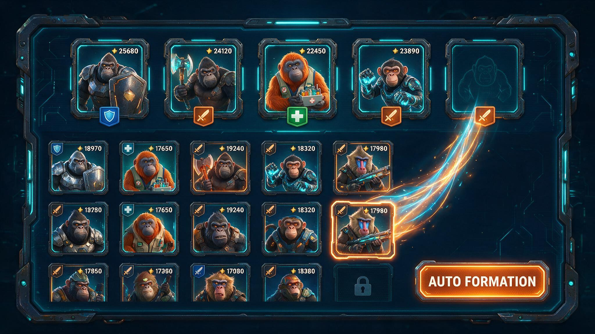
| 职业 | 首入即送（基础五人队） | 后续获取示例（玩出来 / 抽出来） |
|---|---|---|
| T | 机甲工程猿（重甲机甲，P2 机甲体系联动） | 堡垒银背猿 —— 章节首通解锁 |
| N | 秘能萨满猿（能量科技祭司） | 丛林药师猿 —— 活跃任务碎片兑换 |
| DPS | 狂暴战猿 · 神射猎猿 · 爆破工兵猿 | 影刃刺猿 —— 爬塔里程碑；雷炮重猿 —— 本期抽奖限定 |
注：首发池 9 名（示例命名，美需阶段定稿）；英雄差异只体现在职业行为与成长偏向（数值另定），不引入任何操作决策。每节日新增 1 名限定英雄，职业轮流补强 —— 每期都有明确的收集目标位。
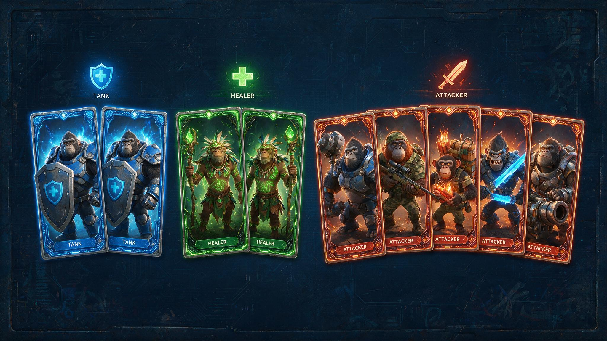
| 通道 | 获取方式 | 设计意图 |
|---|---|---|
| ① 首入即送 | 首次进入即送基础五人队（1T+1N+3DPS 每职业保底），战力足以通前段主线 | 零门槛转化保护 —— 挖孔 79.3% 零付费参与盘的入口逻辑 |
| ② 玩出来（确定性） | 章节首通解锁第二名英雄；爬塔里程碑与节日活跃任务稳定产英雄碎片，攒够直接兑换 | 零氪与中小 R 的确定性奔头 —— 肝有明确回报，活跃被持续拉住 |
| ③ 抽出来（内嵌英雄抽奖） | 抽奖币抽卡，统一奖池 = 本期限定英雄 / 装备卡 / 卡牌碎片 / 强化材料 / 外显；N 抽保底必得本期限定英雄（概率与保底公示）；抽不到英雄也有装备卡进账，重复卡自动转碎片 —— 双重零废抽 | 惊喜感 + 付费加速；限定英雄的稀缺窗口制造本期目标 |
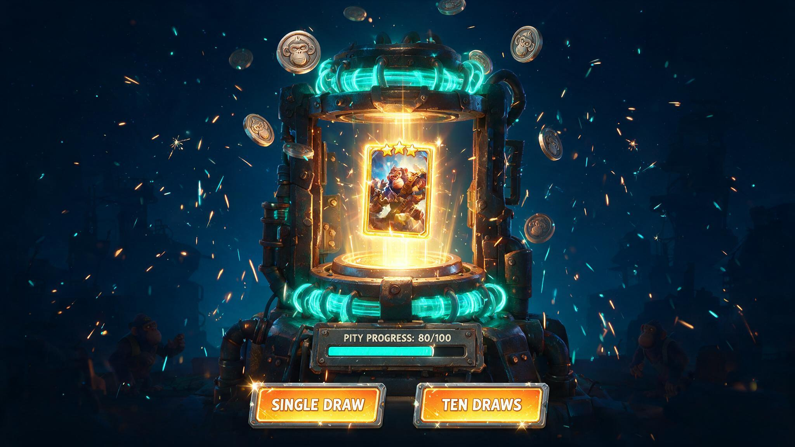
| 机制 | 设计 |
|---|---|
| 等级成长 | 喂养经验材料升级（闯关 / 挂机掉落 + 礼包补充）；等级是英雄强度主轴（曲线另定） |
| 卡面进阶 | 等级到段位，卡面框体升阶：素框 → 铜 → 银 → 金 → 钻 —— 一眼看出这张卡被养到哪； 这是日常层的收藏与炫耀（动态卡是付费层，两层互不冲突、互相铺垫） |
| 突破 | 等级段位上限需英雄碎片突破 —— 碎片三来源：重复抽卡自动转化 / 活跃任务 / 定向礼包（§11 P7） |
| 上阵与全局 | 上阵英雄吃全量战力；未上阵英雄按等级为全局提供图鉴战力加成 —— 收集与养成永不白费 |
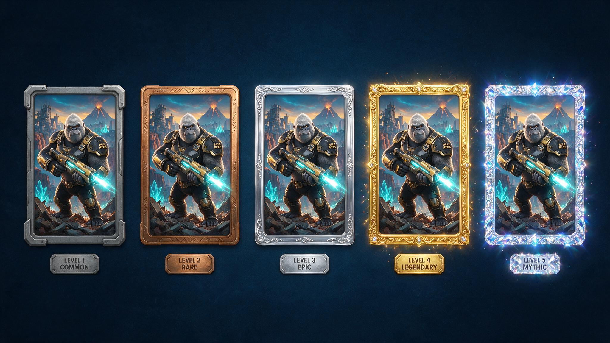
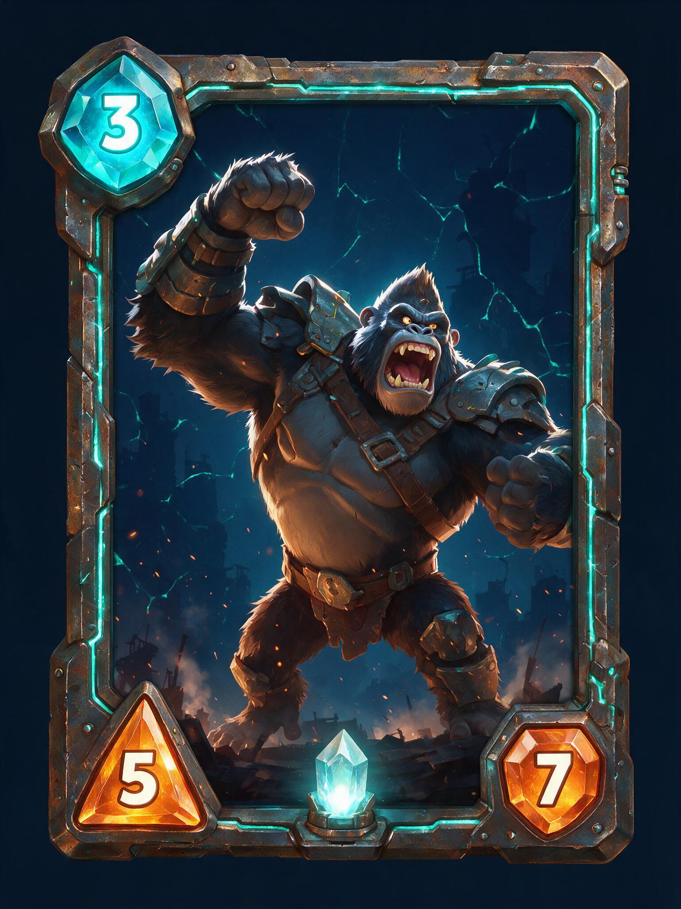
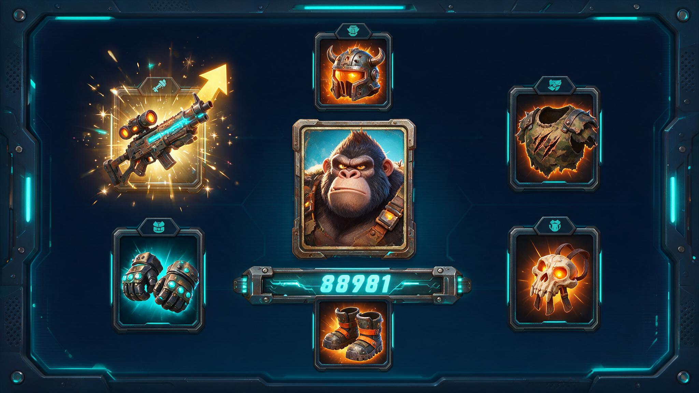
| 类型 | 作用 | 获取 | 强化 | 碎片 |
|---|---|---|---|---|
| 英雄卡 | 上阵作战（T / N / DPS 职能），等级驱动卡面框体进阶 | 首入即送 / 玩出来 / 统一抽奖 | 喂强化材料升级 → 属性 + 换框 | 重复转碎片 → 合成新英雄 / 突破段位 |
| 装备卡 | 镶嵌英雄卡槽位（倾向 4~6 槽）加属性 —— 五人上阵 = 养成面 ×5 | 关卡掉落（主渠道，深关掉好卡）/ 统一抽奖 / 碎片合成 | 同一套喂养交互 → 属性 + 卡面特效升阶 | 重复转碎片 → 合成 / 升阶 |
概念收敛：活动内玩家要理解的资源只有三种 ——「卡（英雄/装备）+ 碎片 + 强化材料」， 外加行动力与抽奖币两个入口货币；对比传统「英雄+装备+材料+图纸+代币…」的多概念活动，认知负担减半，活动更清晰。
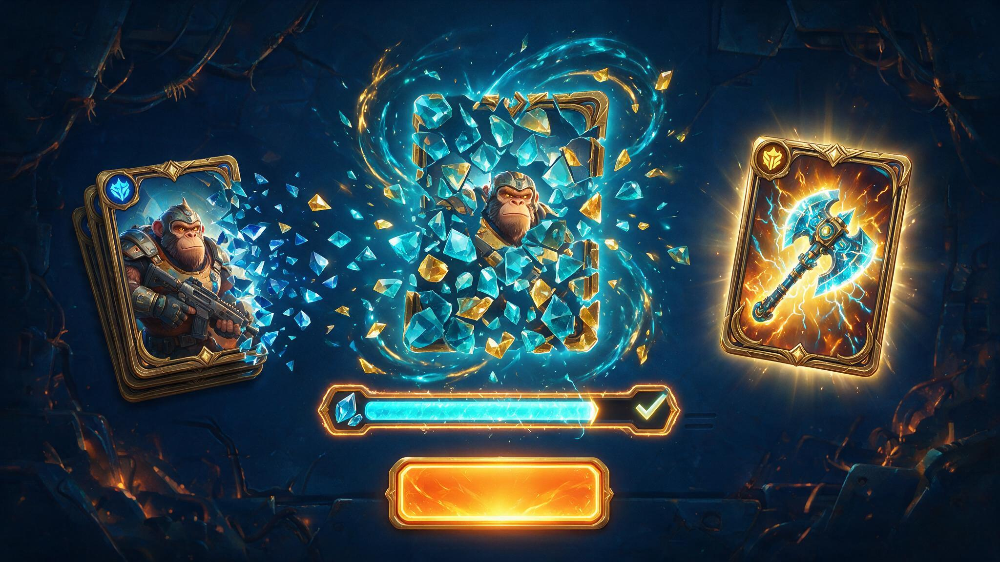
| 维度 | 设计 |
|---|---|
| 稀有度 | 普通 / 稀有 / 史诗 / 传说 四档（英雄与装备通用）；高稀有度 = 更高基础属性 + 更华丽卡面，是掉落与抽奖池的追求锚点 |
| 换装零决策 | 「一键穿戴最优」：系统自动镶嵌战力最高的装备卡组合 —— 可以完全不做选择；想抠细节的玩家手动替换（可选，不必要） |
| 美术形态 | 英雄卡 = 竖版全幅插画 + 等级框体；装备卡 = 统一卡框 + 道具主体插画 —— 全部走 AI 生图管线批产（60 张/批）+ Top 卡精修，一个节日卡池数日出齐 |
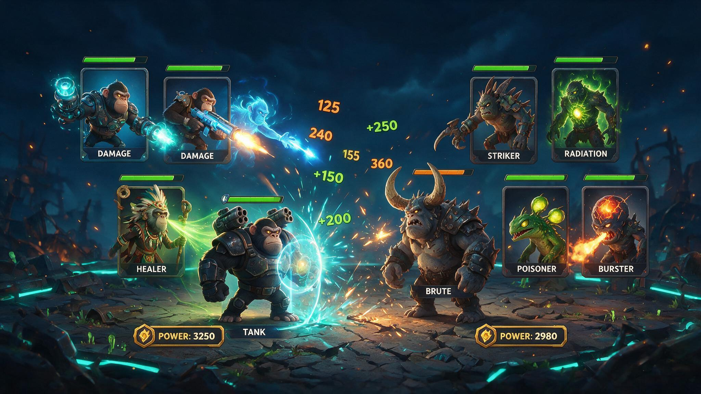
| 规则项 | 定义 |
|---|---|
| 编成 | 玩家自由选 5 名英雄上阵（职业组合不限）；敌方编成由关卡表配置（普通关 3~5 只、精英满编、BOSS = BOSS + 护卫） |
| 站位 | 双方各一列：按 T → DPS → N 自动排序，同职能按战力降序 —— 无手动站位 |
| 行动顺序 | 双方交替、各自从前往后轮流出手（我 1 → 敌 1 → 我 2 → 敌 2 …），阵亡位跳过 —— 完全确定，无速度属性、无随机 |
| 目标规则（全部两条） | 攻击类（T / DPS / 怪）：打对方存活的最前位；治疗类（N）：奶己方血量比例最低的存活单位 |
| 结算公式形态 | 伤害 = 攻击 × 技能系数 − 防御（保底最低伤害）；治疗 = 治疗力 × 系数；无暴击 / 无闪避 / 无属性克制（首期） |
| 死亡与补位 | 血量 ≤ 0 置灰退场，后位自动前移补位 |
| 胜负判定 | 一方全灭即负；达回合上限（防拖局）按双方剩余血量百分比判定 |
| 战力公式形态 | 单位战力 = 攻击 / 生命 / 防御 / 治疗力的线性加权；队伍战力 = 5 单位之和 + 图鉴全局加成 —— 战前对比展示的就是这个数 |
| 碾压 / 失败 | 战力差超阈值 → 快进一击全灭 +「碾压」特写；失败 → 显示战力差 + 三个变强入口（换人 / 强化 / 图鉴） |
PVE 优先、PVP 零成本：首期纯 PVE（敌方编成全配置表驱动）。 二期若加 PVP，就是战力擂台：抓取对方五人队数据打一场自动互殴回放 —— 依然零决策、零实时同步、零平衡压力（比的就是谁养得好，SLG 玩家最服这个）。
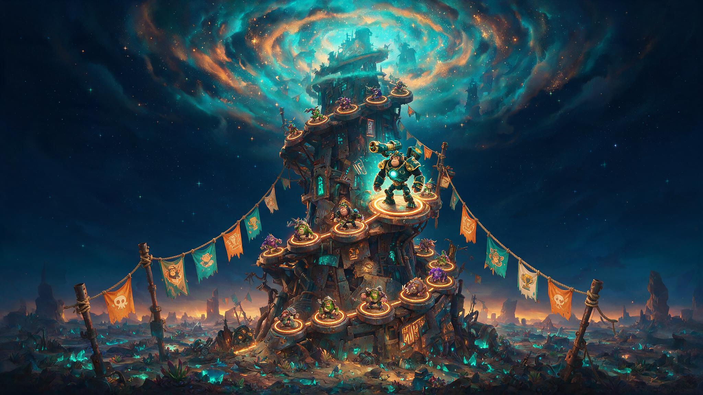
| 层级 | 内容 | 对应挖孔验证结论 |
|---|---|---|
| 主线章节 | 每节日全新 1 章（节日主题全换：场景 / 怪物卡 / BOSS 皮）：普通关 ×N + 精英关 + 章末 BOSS；战力门槛前缓后陡，初始英雄可通前段 | 前段免费养参与（挖孔通关 13,511 人的参与盘逻辑） |
| 无尽爬塔 | 通关主线解锁；每期全新一座塔（节日主题重构，层数与榜单随期重置）：层数无上限、怪物战力递增、每层领奖、里程碑大奖；层数进榜 | 「循环关持续领奖」—— 挖孔循环关 149 人贡献 58% 营收的坑深机制平移；每期重开 = 坑深每期从头再挖（挖孔期次逻辑） |
| BOSS | 高战力门槛 + 更好掉落 + 华丽怪物卡立绘；无机制解题，打不过=战力不够，回去养 | 付费点位铺在推进路径上（卡在 BOSS 前是最强的付费触发场景） |
| 挂机营地 | 离线积累强化 / 经验材料与抽奖币，每日上限封顶，回来一键领取 | 「挂机留存」（挖孔 87% 使用率）+「免费供给设上限」（挖孔换铲箱封顶的边界设计） |
| 行动力 | 闯关消耗行动力，免费恢复有节奏上限；行动力不足 = 今日免费额度用完的自然停点 | 免费与付费的边界钩子（挖孔 50 关免费边界的结构复刻），付费补充见 §11 |
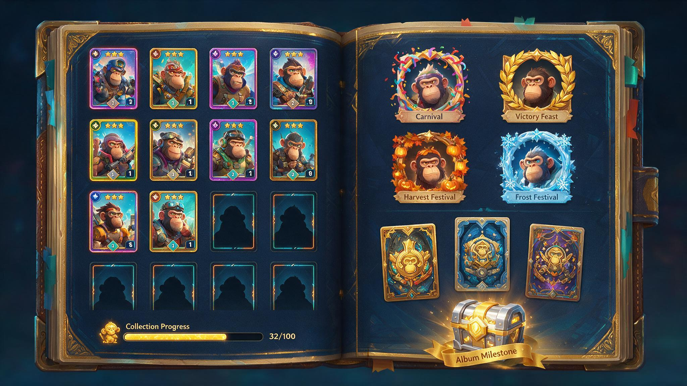
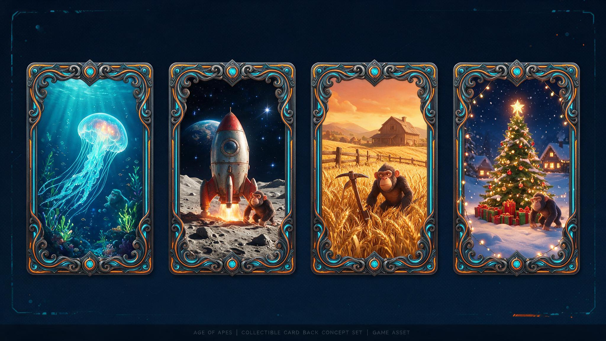
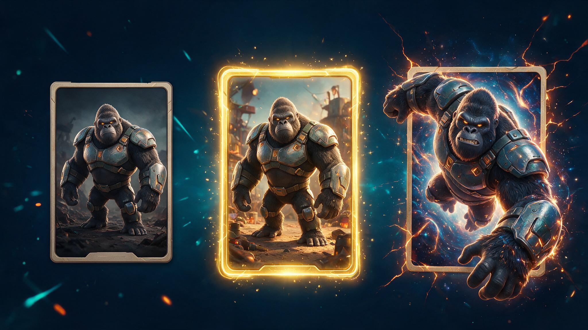
| 档位 | 形态 | 获取 | 制作成本 |
|---|---|---|---|
| 静态卡 | 单张插画 + 统一框体 | 免费全渠道（闯关/挂机/图鉴/抽奖） | AI 批产 + 精修 |
| 动态卡 | 插画动效化：粒子 / 视差 / 局部循环动画，金色框体 | 直售（节日限定上架）+ 累充/BP 顶级奖励点缀 | AI 图生视频/动效管线已具备；单卡小时级，可按人气排产 |
| 签名典藏卡 | 出框全幅插画 + 专属特效 + 序列编号 | 限量直售 / 爬塔榜前列 / 全图鉴大奖 | 少量高投入，每节日 1~2 张，制造稀缺锚点 |
注：动态卡为纯外显（不带数值优势）——付费战力走装备/材料线，付费外显走动态卡线，两条曲线互不污染。
| 榜单 | 规则 | 奖励（复用 P2 外显体系） |
|---|---|---|
| 爬塔层数榜 | 本期新塔最高层数排名（同层比用时）——每期榜单重置，新老玩家同一起跑线 | 前列：老 GACHA 投放的节日外显整体迁来 —— 主城皮肤 / 套装 / 铭牌 + 限定签名卡（复用挖孔排行榜发奖体系） |
| 战力榜 | 活动内总战力排名 —— SLG 玩家最熟悉的荣誉语言 | 战力称号 + 限定卡背 + 头像框 |
| 图鉴收集榜 | 本期图鉴点亮进度排名 | 限定卡背 + 头像框（收集家身份外显） |
| 战力擂台（二期） | 异步自动互殴回放，纯战力比拼 | 赛季外显 + 擂台专属动态卡边框 |
设计立场：榜单奖励全部为外显与荣誉，不投数值 —— 冲榜的付费表达发生在「行动力消耗 + 装备强化」上 （对应挖孔「榜分与消耗强挂钩」的验证结论），荣誉本身保持不可购买的稀缺性。
| 老 GACHA 时代的外显投放 | 在本作的新家 | 获取语境 |
|---|---|---|
| 主城皮肤 / 套装（抽奖大奖） | 爬塔排行榜前列 + 赛季结算 | 荣誉 —— 打上去的，穿出去有故事 |
| 头像框 | 图鉴集齐节点 + 收集榜 | 收集 —— 集出来的 |
| 行军特效 / 表情 | 节日 BP 轨道 + 爬塔里程碑 | 长线 —— 肝出来的 |
| （新增外显位）卡背 / 卡面皮肤 / 动态卡 | 图鉴 + 限时直售 | 收藏与身份 —— 付费第二曲线 |
这就是「事实二」的解药落地：同一批外显资产，从『纯抽奖池』迁进榜单 / 图鉴 / BP 三个有过程的位置 —— 获得有故事、稀缺有叙事；抽奖位则由内嵌英雄抽奖（§03，有语境的抽）接棒。
| 模块 | 免费路径（0 氪可达） | 付费位（只加速 / 只增值） | 说明 |
|---|---|---|---|
| 主线章节 | 免费行动力额度可通全章节（节奏稍慢） | 行动力包 = 当天多打几关 | 前段难度按首入基础队标定 |
| 无尽爬塔 | 无门票，层数只由养成决定 | 材料 / 行动力包 → 爬得更快更高 | 层数榜规则见 §09 |
| 英雄获取 | 首入送五人队 + 章节解锁 + 活跃碎片兑换 —— 周期内可集齐本期英雄 | 抽奖币包 = 提前拿到 + 保底冲刺 | 限定英雄同样有碎片通道 |
| 装备获取 | 关卡掉落为主渠道，深关掉好卡 | 抽奖币包 / 定向碎片包 | 肝与氪同渠道，不同速度 |
| 强化养成 | 材料随闯关 / 挂机稳定产出 | 材料包（本作 ARPPU 主线） | 成长曲线数值另定 |
| 图鉴收集 | 收集与战力加成全免费；缺口可视化 | 末段冲刺包补最后几张 | 分册节点保证前段确定性 |
| 挂机营地 | 完全免费（每日封顶） | —— 无付费位 | 纯回访福利 |
| 内嵌抽奖 | 抽奖币闯关 / 活跃稳定掉落（封顶），期内累计足以触达保底 | 抽奖币礼包 | 概率与保底公示 |
| 节日外显 | BP 免费轨 / 图鉴节点 / 爬塔里程碑 —— 每期均有免费外显 | BP 付费轨 / 动态卡直售 / 签名限量 | 榜单荣誉不可购买 |
| SLG 道具轨 | 每关免费掉落（封顶） | —— | 0 氪参与的硬回报 |
| 层级 | 活动内目标 | 主要行为 | 典型付费 | 完成感来源 |
|---|---|---|---|---|
| 非 R | 集齐本期英雄 + 图鉴前段 + 免费外显 | 每日行动力打满、挂机领取、活跃任务攒碎片 | 无 | 凭时间集齐与养成；SLG 补给白拿 |
| 小 R | 全 BP 轨 + 比免费快一步 | 同上 + 省省卡 / 小额行动力包 / BP | 月卡级小额 | 全程顺滑无卡点，BP 全领 |
| 中 R | 本期全收集 + 爬塔中上游 + 1~2 张动态卡 | + 抽奖币中包 / 成就阶梯包 / 图鉴冲刺 | 常规礼包档 | 全收集达成；秀出第一张动态卡 |
| 大 R | 爬塔前列 + 全图鉴 + 动态卡成套 | + 材料大包连购 / 动态卡多张 | 大额多档 | 榜上有名；收藏成套 |
| 超 R | 榜首荣誉 + 签名限量编号 + 全动态收藏 | 全深度消费 + 冲榜行动力 | 无上限深度（挖孔循环关人均 $1,522 先例） | 全服可见的唯一性 |
各层产出配比、免费集齐所需天数、付费档位 → 数值框架单独评审。
▲ 图 10-1 玩家旅程 × 付费点位（自绘示意）。上手期刻意零付费：挖孔 79.3% 零付费参与者证明大参与盘是付费深度的土壤。
| 付费点 | 玩家动机（什么时候想买） | 包装形态（P2 落地） | 已验证先例 |
|---|---|---|---|
| P1 行动力补充 | 今日免费行动力用完、正在兴头上 | 常规节日礼包多档位（小额高频），走 2013 节日礼包体系｜每期只换：内容物与图标主题 | 挖孔锄头/换铲箱 CD 档逻辑 |
| P2 抽奖币礼包 | 想要本期限定英雄 / 差保底几抽 | 抽奖币多档礼包 + 节日大包（概率与保底公示）｜每期只换：限定英雄与奖池 | P2 各类 GACHA 币直售形态 |
| P3 强化材料包 | 卡在战力门槛 / BOSS 前差一口气 | 强化 + 经验材料组合包，档位随章节推进上探 —— 本作 ARPPU 主线（五人小队 = 养成面 ×5）｜每期只换：内容物 | 挖孔「付费点位铺在推进路径」→ ARPPU +151% |
| P4 成就阶梯包 | 爬塔层数里程碑达成时的奖励感窗口 | 成就解锁式礼包，阶梯加密铺设（一次性限购）｜每期只换：奖励内容，阶梯结构不动 | 挖孔成就里程碑加密至 15 档的验证 |
| P5 动态卡直售 | 主战英雄想要「金色版」、收藏与炫耀 | 节日限定上架、明码直售；纯外显零数值｜每期只换：上架动态卡清单 | 炉石黄金卡 / Snap 变体卡；自家头像框渗透 96.3% |
| P6 节日 BP | 确定性的长线回报偏好 | 通行证：免费轨 + 付费轨，BP 代币产抽奖币/材料｜每期只换：主题皮与轨道内容 | P2 挂机 BP 壳（21127531）成熟先例 |
| P7 图鉴冲刺包 | 图鉴集齐节点差最后几张（且差的是战力） | 卡牌碎片定向包（英雄/装备）/ 外显补齐包，节日末段限时上架（闭档冲刺窗口）｜每期只换：定向内容 | 挖孔 D7 末日反弹 +109% 的闭档窗口验证 |
| P8 签名典藏卡 | 鲸鱼级收藏与身份表达 | 序列编号限量直售 + 全图鉴/榜单大奖并行｜每期只换：本期签名卡 1~2 张 | Snap 高档变体经济；挖孔循环关鲸鱼人均 $1,522 的深度证明 |
| 每节日更换（策划配置层） | 永久复用（程序框架层） | 配置落地（沿用 P2 活动表体系） |
|---|---|---|
|
· 节日新英雄 + 英雄皮肤 · 装备卡池与材料掉落 · 英雄抽奖池（限定英雄 + 权重 + 保底） · 全新节日章节 + 新爬塔（榜单重置） · 外显套装：卡背/卡面/头像框 · 节日 BP 轨道与大奖 |
· 5v5 站桩战斗与演出（两条目标规则） · 关卡/爬塔/挂机框架 · 卡牌强化与碎片合成系统 · 内嵌抽奖机（GACHA 组件复用） · 图鉴与收集加成框架 · 排行榜与结算 · §11 付费点结构（定死不改） |
· 活动壳：2112 主表 + 2111 调度（现行体系） · 新增表：英雄卡表 / 装备卡表 / 关卡表（新章节+新塔）/ 掉落表 / 抽奖池表 / 图鉴表（全表驱动，换档 = 换表） · 付费：2013 礼包 + 2135 + BP + 累充联动（全部现成管线） · 换档 SOP 与自检：复用挖孔换档 + 上线前 9 检查点体系 |
| 步骤 | 事项 | 要做什么 | 产线与工具 |
|---|---|---|---|
| 1 | 主题包装与美需 | 定本期新英雄设定与皮肤、节日章节与新爬塔主题、BOSS 设定、外显套装方向及投放位（榜单/图鉴/BP 对号入座） | 节日美需产线（历年范式知识库） |
| 2 | 美术批产 | 新英雄卡面 + 皮肤卡面、装备/材料图标、外显（卡背/头像框/装饰）、BOSS 立绘 | AI 生图管线批产（60 张/批）+ Top 精修 |
| 3 | 内容配表 | 英雄表（新英雄+返场池）/ 掉落表（玩法道具轨 + SLG 道具轨双配置）/ 节日新章节与新爬塔（敌方编成 + 难度曲线，榜单重置）/ 抽奖池（奖池+权重+保底）/ 图鉴册 / BP 轨道 | 全表驱动，参考上期表 patch（挖孔换档同款流程） |
| 4 | 付费换装 | 对照 §11 逐项换「填充内容」：8 付费点礼包内容物（2013/2135）、动态卡上架清单、BP、累充/限抢联动位 —— 结构一律不动 | §11 定版表 + 现成礼包配置管线 |
| 5 | 活动壳与调度 | 2112 活动行 + 2111 calendar 排期 | 现行活动体系 |
| 6 | 本地化 | 英雄名 / 装备名 / 活动文案 18 语 | 翻译自动扩散管线 |
| 7 | 上线自检 | 配置检查点全量核查 + QA-vs-分支 diff + Unity 客户端链路实测 | 自检清单 + AI 直连 Unity 实测（宴会做菜先例） |
| 8 | 上线与复盘 | 日报监控；收官回归（参与 / 时长 / 坑深 / 图鉴 / 付费结构五口径） | 回归管线（挖孔口径 + 本案新增时长口径） |
换档体量预估为「挖孔级」：第 1~2 步是创意工作，第 3~8 步已全部工具化 —— 正是本人 AI 工作流（配置 skill + 生图管线 + 自检清单 + 回归管线）跑熟的那条链路。
| 角色 | 范围（首期） | 明确不做（首期） |
|---|---|---|
| 程序 | 5v5 站桩战斗（顺序行动循环 + 两条目标规则）与演出、自由编队 UI、关卡/爬塔/挂机框架、卡牌强化与碎片合成、装备槽、图鉴系统、内嵌抽奖（复用现有 GACHA 组件，近零新增） | 卡牌规则引擎、实时 PVP、战斗动画系统（互殴演出用卡牌位移+飘字通用方案） |
| 美术 | UI 框架一套、英雄卡面 + 装备卡面插画（AI 批产 + Top 精修，统一框体程序拼装）、BOSS 立绘、节日外显套装 | 骨骼动画、技能特效序列帧 |
| 策划（本人） | 规则细案与数值框架、全部配置表、卡面美需与 AI 批产、HTML 可玩原型、上线回归 | —— |
| 节点 | 交付 |
|---|---|
| 2026 Q3 | 立项评审通过；HTML 可玩原型（互殴演出 + 装备强化循环可上手体验）；AI 卡面批产验证（首批 60 张）；数值框架单独出 |
| 2026.10 | 开发跟进；首期英雄 / 装备卡池 / 关卡 / 外显内容全量配置完成；音效与本地化走现有自动化管线 |
| 2026.11-12 | 首期压节日档上线；数据回归（沿用挖孔回归口径：参与/坑深/图鉴/付费结构）；快速调优后沉淀为全节日轮换资产 |
| 风险 | 对策 |
|---|---|
| 玩法太轻、易腻 | 节日短周期（7~14 天）天然匹配轻玩法 —— 玩的是「这期收不收得齐、爬多高」，不是玩法新鲜感；收集/爬塔/外显三条目标线轮着给钩子；每节日新英雄新卡池自带新鲜感 |
| 零决策被评「没深度」 | 这是定位不是缺陷：对标咸鱼之王 / AFK 式「卡牌小队 + 数值养成」的成熟品类；战斗零操作、编队自由 + 一键推荐（决策可选不强迫）；深度在编成流派、养成规划与收集执念，不在操作 —— 与 SLG 主玩法用户画像同构（挖孔 79.3% 零付费重度参与者就是这批人） |
| 养成曲线数值风险 | 战力/掉落/强化曲线用蒙卡模拟工具（挖孔模拟器同款方法论）批量跑推进节奏定档；数值框架单独评审 |
| 美术量超预期 | 卡面 AI 批产已实测（60 张/批）；框体程序拼装避免逐卡排版；动态卡按人气排产（先上主战英雄） |
| 与现有 GACHA 收入互食 | 本案定位就是「替换衰减坑位」而非叠加：排期上错峰接替表现最弱的纯抽位，用回归数据决定替换节奏 |
| 程序排期竞争 | 零规则引擎 / 零动画 / 零实时同步 / 全表驱动 —— 程序量已压到「带演出的数值比大小」级别；一次开发多年复用，ROI 论证见 §01 |
| 挖孔验证要素 | 本作落位 | 强化点 |
|---|---|---|
| 图鉴收集 71.9 万件宝物 / 断崖处付费中位数 $2.86→$1,058 |
英雄 / 装备 / 外显三本图鉴（分册 + 节点奖励 + 收集加战力） | 收集从情怀升级为战力回报；缺口可视化 |
| 排行榜荣誉 前 100 名覆盖 44% 营收 |
爬塔层数榜 / 战力榜 / 图鉴榜 / 战力擂台（二期） | 荣誉纯外显不可购买；冲榜消耗走行动力与强化 |
| 循环关持续领奖 循环关 149 人 = 58% 营收、人均 $1,522 |
无尽爬塔：层数无上限、每层领奖、里程碑大奖 | 装备强化让「再爬一层」永远有变强路径可买 |
| 挂机留存 87% 参与者使用、跨天回访 |
挂机营地产强化材料/抽奖币，每日封顶 | 封顶设计保「免费供给设上限」的付费边界 |
| ＋ 新增长线 | 节日新英雄 + 内嵌英雄抽奖（有语境的抽）· 动态卡/签名卡（付费第二曲线） | 炉石/Snap 先例 + 自家外显渗透 96.3% 双重背书 |
《猩球对决》节日卡牌 RPG 策划案 v1.7 · 刘思毅 · 2026-07 · 配图为 AI 概念示意 / 自绘流程图，非最终美术 · 数值框架另行单独评审